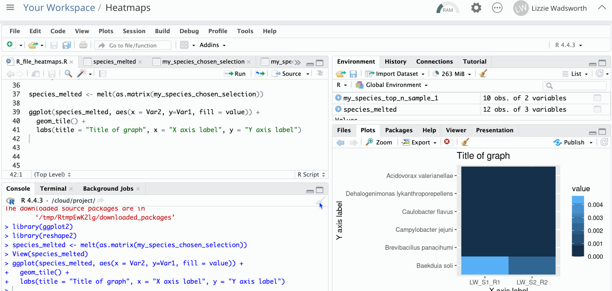

{kind=link}
{kind=link}
my_species_abundance_data <- read.csv("FILENAME.tsv", sep = "\t", row.names=1)Heatmaps for species analysis
Making heatmaps from species analysis
A few of you have asked how to go from the species analysis tables in galaxy to generating heatmaps. This can be done in R, so find below a short guide to setting these up.
This is entirely optional - it is perfectly okay to display the same information in an excel table
Dowloading the table from galaxy and renaming
We can save the species abundance table from galaxy - this is a tsv file (tab separated file) but it is renamed as a tabular file. You can rename this to remove the .tabular and leave it as a .tsv file.
I’m working on a Mac but it is the same for Windows
Using PositCloud for R projects
Create a free account on posit.cloud to access R and all packages. Like Galaxy, this is a cloud-based solution so the actual analyses is run on a remote server. Therefore this should work from any device.
You will not need a paid plan for this project
Once you’ve created an account:
- Log in and open up a new RStudio Project.
- Use the upload button to upload your abundance file
- Create and save a new R file (top left panel)
Reading the file and replacing NAs with 0
First, we need to read the data from the file and store it.
We can create save our results as a variable (like a container) with code like: variable_name <- task() which save the results of a task or function as variable_name.
- Use the following R code, changing FILENAME to your filename. This will open your file and save it as a variable called my_species_abundance_data
- Use the following R code to replace all NAs with 0s
my_species_abundance_data[is.na(my_species_abundance_data)] <- 0 {kind=link}
Select top n species, or a selection of species
Next, choose what data you want to plot on your heatmap. The full datasets are too large!
There are different ways you can do this:
1. Choose top values based on abundance value for a particular column
For this we can use the dplyr package, which has a function called top_n. You need to change the words in capital letters to match what you want to choose.
# Install and load the package
install.packages('dplyr')
library(dplyr)
# The below code is selecting for the top 10 values in column
my_species_top_n_sample_1 <- top_n(NAME_OF_DATA,
NUMBER_OF_TOP_VALUES_TO_PICK,
COLUMN_NAME_FOR_SELECTION){kind=link}
2. Choose rows based on species name
You can create a vector containing all the species names you want to extract from your table, and use this to create a new dataframe based on these species. Spelling must match row names exactly. I’ve picked 5 at random below.
# Choose species.
my_species <- c('Baekduia soli', 'Brevibacillus panacihumi', 'Campylobacter jejuni', 'Caulobacter flavus', 'Dehalogenimonas lykanthroporepellens')
# Select species from row
my_species_chosen_selection <- my_species_abundance_data[my_species,] # the comma is important here, it selects all columns for the chosen rows. {kind=link}
Simple heatmap
Use the heatmap() and legend() functions to make a simple heatmap with R functions. You can then edit the labels and formatting in another program (such as on a powerpoint slide).
# Change my_species_chosen_selection to the name of your dataframe, e.g. my_species_top_n_sample_1
heatmap(as.matrix(my_species_chosen_selection))
# Add a legend with three colours
legend(x="left", legend=c("mini", "med", "max"),fill=heat.colors(3)){kind=link}
ggplot2 heatmap
This heat map gives a bit more control over the colour and legends, but requires an few extra steps. We have to first “melt” the data so that the species name and sample name are both in columns.
First, install and load the packages ggplot2 and reshape2:
# Install and load packages
install.packages('ggplot2')
install.packages('reshape2')
library(ggplot2)
library(reshape2)Next, reformatted into a melted form. This will give you a column for species names, a column for which sample and a column for the abundance value.
species_melted <- melt(as.matrix(my_species_chosen_selection))Finally, we can create a ggplot based on our data:
I suggest putting the samples on the X axis and species on the Y axis
ggplot(species_melted, aes(x = COLUMN_SAMPLES, y=COLUMN_SPECIES, fill = value)) +
geom_tile() +
labs(title = "Title of graph", x = "X axis label", y = "Y axis label"){kind=link}
ggplot2 colour schemes
With ggplot2, you can add either of the following lines to change the colours of the graph
1. Colour based on named colours or html codes
The line scale_fill_gradient(high = "red", low = "yellow") allows you to choose the high and low colours for a gradient based on ggplot named colours
For example:
ggplot(species_melted, aes(x = COLUMN_SAMPLES, y=COLUMN_SPECIES, fill = value)) +
geom_tile() +
# add new line here with + at the end
scale_fill_gradient(high = "lavenderblush1", low = "darkorchid4") +
labs(title = "Title of graph", x = "X axis label", y = "Y axis label")2. Colour based on palette
You can also use any of the RColorBrewer predefined colour pallettes:
ggplot(species_melted, aes(x = COLUMN_SAMPLES, y=COLUMN_SPECIES, fill = value)) +
geom_tile() +
# add new line here with + at the end
scale_fill_distiller(palette = "Spectral") +
labs(title = "Title of graph", x = "X axis label", y = "Y axis label") And that’s it! You’ve represented your data as a heat map.